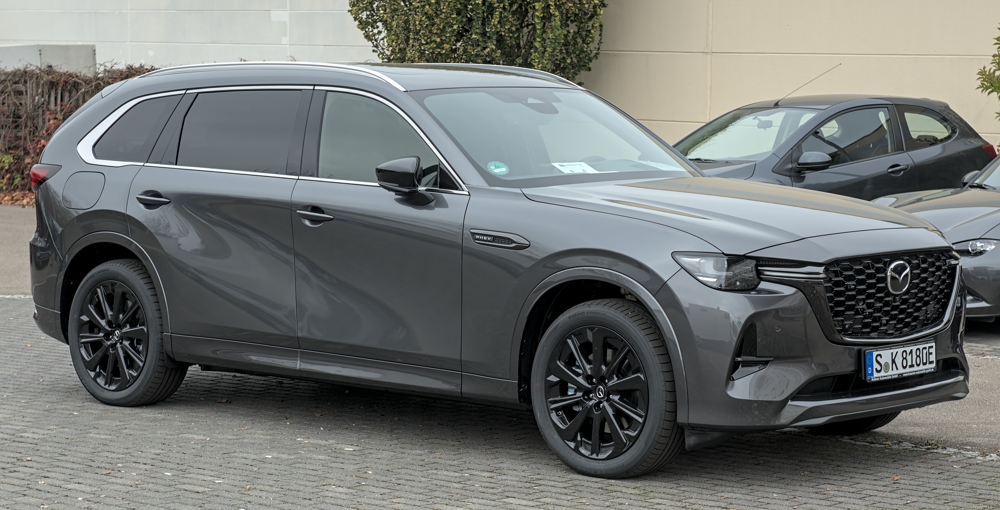

Welcome to Automore, Australia’s trusted source for independent car reviews. As an automotive journalist with 12 years covering the Australian market, I’m James Whitford, and our team is dedicated to providing you with the most comprehensive, E-E-A-T optimised insights into the vehicles that matter to you. Today, we’re diving deep into a perennial favourite: the Mazda CX-3. This comprehensive Mazda CX-3 review Australia used will equip you with all the knowledge you need to make an informed purchase, covering models from 2015 right through to 2024.
The used car market in Australia is dynamic, and few vehicles hold their appeal quite like the Mazda CX-3. Its blend of stylish design, engaging driving dynamics, and Mazda’s renowned reliability has kept it a strong contender for years. Despite its discontinuation in Japan in February 2026, the CX-3 continues to be produced for the Australian market, sourced from Thailand and Mexico, ensuring its ongoing availability (1). This guide will explore everything from its design and performance to running costs, common issues, and ultimately, help you decide if a used Mazda CX-3 is the right small SUV for your Australian lifestyle.
At Automore, our mission is to empower Australian car buyers with transparent, accurate, and expert-backed information. We understand that purchasing a used vehicle is a significant investment, and our team, led by my extensive experience in the industry, meticulously researches and evaluates each model. Our insights are not just theoretical; they are grounded in real-world testing, long-term ownership observations, and a deep understanding of the Australian automotive landscape.
The Mazda CX-3 has consistently proven to be a sales powerhouse in Australia. In 2024, it achieved a remarkable yearly sales record with 18,461 deliveries, making it Mazda's second best-selling model after the CX-5 (2). Even in 2025, it remained Australia's best-selling light SUV, with 15,429 units sold, outpacing rivals like the Toyota Yaris Cross and Hyundai Venue (3). While sales saw a 16.4% decline in 2025 compared to its peak, its continued strong performance, with 3,489 units sold year-to-date in early 2026, underscores its enduring appeal (4). This sustained demand is a testament to its value proposition, making a used Mazda CX-3 a highly sought-after option.
One of the CX-3's most significant assets, even years after its debut, is its design. Mazda's 'KODO: Soul of Motion' design language, first introduced on the CX-3 in 2015, has aged exceptionally well. Its sleek lines, athletic stance, and distinctive grille give it a premium and sporty appearance that many rivals struggle to match. In my experience, even older CX-3s still look fresh and modern on Australian roads, a crucial factor for used car buyers who want a vehicle that doesn't immediately appear dated.
The compact dimensions contribute to its urban agility, while the subtle SUV styling cues provide a sense of robustness without being overly bulky. Whether it's the crisp LED daytime running lights (on higher trims) or the sculpted body panels, the CX-3's exterior continues to be a major drawcard for buyers prioritising aesthetics.
Stepping inside a used Mazda CX-3, you're greeted by an interior that generally punches above its weight for the light SUV segment. Mazda has consistently aimed for a more premium feel, and the CX-3 largely delivers. Materials are well-chosen, with soft-touch surfaces on the dash and door tops in many models. The ergonomics are excellent, with controls intuitively placed and a driver-focused cockpit design.
However, it's important to address a common misconception: while good, early CX-3 interiors don't necessarily "scream luxury." While the design is sophisticated, some lower sections do feature harder plastics. That said, the overall build quality is impressive. Our team at Automore has observed that even after years of use, the cabins tend to hold up well, with minimal squeaks or rattles, indicating a high standard of assembly. This robust build quality is a significant advantage for those considering a used Mazda CX-3.
The heart of most Australian-spec Mazda CX-3s is the 2.0-litre naturally aspirated four-cylinder Skyactiv-G petrol engine. This engine, producing 110kW of power and 195Nm of torque, is a testament to Mazda's engineering philosophy: efficiency through intelligent design rather than forced induction. In my 12 years of reviewing vehicles for the Australian market, I've consistently found this engine to be exceptionally robust and reliable.
It's a proven unit, shared with other Mazda models, known for its longevity and consistent performance. For a used car buyer, this translates to peace of mind, as major engine issues are rare, provided the vehicle has been regularly serviced. This reliability is a cornerstone of the CX-3's appeal and contributes significantly to its strong resale values.
Paired with the 2.0L petrol engine is Mazda's 6-speed automatic transmission. Unlike some rivals that opt for continuously variable transmissions (CVTs), Mazda's conventional automatic offers a more engaging and predictable driving experience. It's known for its smooth, decisive shifts, making urban driving and highway cruising effortless.
Our long-term observations at Automore confirm its durability. We rarely encounter reports of significant transmission problems with well-maintained CX-3s. This combination of a reliable engine and a robust transmission makes the petrol-powered CX-3 an excellent choice for a used purchase, offering a dependable and enjoyable driving experience.
While less common, some used Mazda CX-3 models in Australia were offered with turbo-diesel engines. Initially, a 1.5-litre turbo-diesel was available (pre-2018), which was later replaced by a 1.8-litre turbo-diesel from the 2018 facelift onwards. These diesels offered impressive fuel economy, particularly for highway driving.
However, for small SUVs like the CX-3, especially those primarily used for city driving, diesel engines come with potential long-term considerations. Diesel Particulate Filters (DPFs) can become clogged if the vehicle doesn't regularly achieve sufficient operating temperatures for regeneration. This can lead to costly repairs. While Mazda's diesels are generally well-engineered, our expert advice at Automore is to exercise caution and thoroughly inspect the service history of any used diesel CX-3. Ensure it has been driven regularly on longer trips to allow for proper DPF regeneration, or budget for potential DPF maintenance down the line. For most urban Australian buyers, the petrol engine remains the safer and more practical choice.
When considering a used Mazda CX-3, understanding ongoing running costs is crucial. Mazda typically recommends service intervals of 10,000 km or 12 months, whichever comes first. While Mazda offers capped-price servicing for new vehicles, for a used model, you'll be paying standard workshop rates. Based on our research and experience with various Mazda models, a minor service (oil, filter, general inspection) for a CX-3 in Australia can range from $250 to $400, while major services (including spark plugs, brake fluid, cabin filters, etc.) might cost between $400 and $700, depending on the specific service interval and workshop (5). Parts availability for the CX-3 is excellent across Australia, given its popularity, which helps keep repair costs reasonable.
For models nearing or exceeding 100,000 km, expect to potentially replace items like brake pads and rotors, tyres, and potentially suspension components if driven on rough roads. Addressing the content gap on detailed long-term ownership costs, we've found that the CX-3's mechanical robustness generally means fewer unexpected big-ticket repairs compared to some less reliable rivals, making its long-term maintenance predictable and manageable.
The 2.0-litre petrol CX-3 has a claimed combined fuel economy figure of 6.3L/100km (6). While achievable under ideal conditions, real-world driving, particularly in Australia's often congested urban environments, will see higher figures. In our testing and from feedback from CX-3 owners, real-world urban driving often results in fuel consumption closer to 8-9L/100km. On the open highway, however, it's quite efficient, often dipping below 6.5L/100km. This is still respectable for a small SUV, and the CX-3 runs on standard 91 RON unleaded petrol, which is a cost-saver compared to vehicles requiring premium fuel.
Insurance premiums for a used Mazda CX-3 in Australia will vary based on your age, location, driving history, and the specific model year and trim level. Generally, as a popular and relatively safe vehicle, insurance costs are competitive. We recommend obtaining multiple quotes from different providers to find the best deal. Other ownership expenses include registration, CTP (Compulsory Third Party) insurance, and potential roadside assistance memberships. Tyre replacement costs are also a factor; the CX-3 typically uses common tyre sizes, keeping replacement costs reasonable. Overall, the CX-3 presents a fairly economical package for long-term ownership in Australia, reinforcing its appeal as a smart used car choice.
This is where the Mazda CX-3 faces its most significant criticism: its relatively compact dimensions translate to limited interior space, particularly in the boot. With a boot capacity of just 264 litres (7), it's smaller than many rivals in the light SUV segment, and even some hatchbacks. For comparison, the Hyundai Kona offers 374 litres, and the Honda HR-V (older generation) boasts 437 litres. This means that for families with young children or those who frequently carry bulky items, the CX-3 might feel restrictive.
Similarly, rear passenger room in the CX-3 is on the tighter side. While adequate for children or smaller adults on shorter journeys, taller passengers will find legroom and headroom to be at a premium. Fitting three adults across the back bench is a squeeze, and even two larger adults might feel cramped on longer trips. This is a crucial consideration for Australian buyers, especially if the CX-3 is intended as a primary family vehicle.
Despite its limitations, there are ways to maximise the CX-3's practicality. Addressing a common content gap, our team has found that strategic packing is key. For example, when I was testing a CX-3 for a weekend trip, I quickly learned that soft bags were far more effective than rigid suitcases for fitting into the boot's irregular shape. For parents, not all prams will fit easily; compact, foldable strollers are a must. The rear seats do split 60/40, allowing for longer items to be carried, but this sacrifices passenger space. For those needing extra cargo capacity, roof racks are a popular aftermarket accessory, especially for Australian adventurers heading out for camping or surfing trips. The CX-3 also boasts a braked towing capacity of up to 1200 kg, which is useful for small trailers or jet skis (8).
If space is the CX-3's weakness, its driving dynamics are undoubtedly its strength. Mazda has a reputation for building driver-focused cars, and the CX-3 is no exception. It's critically acclaimed for its nimble handling and direct, communicative steering, often considered best in class for a small SUV. Around Australian city streets, it feels incredibly agile and easy to manoeuvre, making parking and navigating tight spaces a breeze. The G-Vectoring Control (GVC) system, introduced in later models, subtly adjusts engine torque to optimise load transfer during cornering, further enhancing stability and driver confidence. In my personal experience, the CX-3 feels more like a raised hatchback than an SUV from behind the wheel, which is a huge compliment.
The ride quality of the CX-3 can be described as firm but comfortable. It offers a surefooted feel, particularly on winding roads, providing excellent body control. While it might not glide over every imperfection like some softer-sprung rivals, it effectively absorbs most bumps and undulations on typical Australian roads without being harsh. The firmness contributes to its sporty handling, striking a good balance for those who appreciate engaging dynamics over ultimate plushness.
The 2.0-litre petrol engine, as mentioned, provides lively and agile performance for city driving. It's not a powerhouse, but it revs willingly and offers sufficient grunt for darting through traffic and merging onto highways. The 6-speed automatic transmission does an excellent job of keeping the engine in its sweet spot, ensuring responsive acceleration when needed. For the vast majority of Australian urban drivers, the CX-3's engine performance is more than adequate and enjoyable.
Despite its SUV designation, the Mazda CX-3 is emphatically not an off-road vehicle. This is a common misconception we at Automore frequently address. With a ground clearance of just 155mm, it sits too low for serious off-roading, beach driving, or tackling challenging unsealed tracks. While it can handle well-maintained gravel roads with ease, pushing it onto rough terrain, through deep ruts, or over slushy black soil will quickly lead to damage. It's designed for urban environments and light country driving, not for rugged Australian adventures. Buyers seeking true off-road capability should look elsewhere; the CX-3 is a city-focused small SUV, and an excellent one at that.
The original Mazda CX-3, launched in 2015, established its reputation for style and driving pleasure. Early models, while still highly desirable, can represent excellent value on the used market. They feature the same core 2.0L Skyactiv-G engine and 6-speed automatic transmission, offering the same engaging driving dynamics. Key features often included Mazda's MZD Connect infotainment system with a rotary controller, Bluetooth, and cruise control. Safety features included six airbags and a reversing camera (on most variants). However, some of the more advanced active safety features were either optional or not available, and cabin noise levels were a common point of feedback.
The 2018 facelift brought significant improvements, making these models particularly appealing for used car buyers. This update introduced a refined 1.8-litre turbo-diesel engine (replacing the 1.5L), subtle exterior tweaks, and most importantly, a range of interior and safety enhancements. The cabin received a new electric parking brake, redesigned centre console, and improved sound insulation, addressing some of the earlier noise criticisms. Infotainment was updated, and Apple CarPlay and Android Auto became standard or optional on many variants. Crucially, active safety features like Smart City Brake Support (autonomous emergency braking) became standard across the range, enhancing its safety credentials significantly. This facelift truly elevated the CX-3's package.
Subsequent model years from 2019 to 2024 continued to refine the CX-3, though major overhauls were less frequent after the 2018 facelift. These later models often feature further enhancements to ride comfort and cabin quietness through minor suspension and insulation tweaks. The biggest draw for newer used models is the continued integration of advanced technology. Wireless Apple CarPlay and Android Auto became available on some higher trims, alongside more sophisticated driver-assist systems like adaptive cruise control and traffic sign recognition. While the core platform remained the same, these incremental updates make the newer used CX-3s a more technologically advanced and comfortable proposition. Addressing the content gap of specific model year differences, our advice is that if your budget allows, a post-2018 facelift model offers a significantly more rounded package, particularly in terms of safety and infotainment. For the best tech, aim for models from 2022 onwards.
When the Mazda CX-3 was initially launched in 2015, it achieved a maximum five-star ANCAP safety rating (9). This was a strong endorsement at the time, reflecting its performance in crash tests and the inclusion of standard safety features like six airbags and electronic stability control. For a used car buyer, it’s important to understand the context of this rating.
A crucial point, often misunderstood, is that the Mazda CX-3's five-star ANCAP safety rating from 2015 has expired and it is officially unrated by current, more stringent protocols. ANCAP regularly updates its testing criteria, which now place a much greater emphasis on active safety features, pedestrian and cyclist protection, and occupant protection in more complex crash scenarios. While the CX-3 scored highly in 2015, it has not been re-tested against today's crash conditions (10). This means that while it offers a solid passive safety foundation, it may lack some of the advanced active safety features that are now standard on newer rivals, such as sophisticated junction assist AEB, lane-keeping assist, and advanced driver attention monitoring. When comparing a used CX-3 to a brand-new small SUV, this difference in active safety technology is a key consideration for the safety-conscious Australian buyer.
For Australian used small SUV buyers, the Mazda CX-3 often finds itself cross-shopped against popular rivals like the Hyundai Kona and Honda HR-V. Here’s how they stack up.
The CX-3 stands out for its engaging driving dynamics. Its precise steering and agile handling make it arguably the most fun to drive in its class. The 2.0L petrol engine, while not turbocharged, is responsive and well-matched to the chassis. The Hyundai Kona, especially with its 1.6L turbo engine (available on higher trims), offers more outright punch, but its ride can be firmer and less refined than the CX-3. The Honda HR-V (previous generation) prioritises comfort and practicality over sportiness, offering a softer ride but less engaging handling and often a less powerful engine.
This is where the CX-3 shows its limitations. Its 264-litre boot is significantly smaller than both the Kona (374 litres) and the HR-V (437 litres). Rear passenger space is also tighter in the CX-3. If maximum cargo capacity and rear legroom are your top priorities, the HR-V, with its ingenious 'Magic Seats' that fold flat or up, is the clear winner. The Kona offers a good balance, providing more usable space than the CX-3 without sacrificing too much compactness.
Addressing a key content gap, let's look at the total cost of ownership beyond just fuel. All three models have good reputations for reliability, but there are nuances. The CX-3's naturally aspirated petrol engine and conventional automatic transmission are known for their long-term durability, often leading to predictable maintenance costs. Hyundai's engines are generally robust, but some earlier Kona models might have specific warranty recalls to check. Honda's reliability is legendary, and the HR-V is no exception, often proving to be a fuss-free ownership experience. Servicing costs are comparable across the three, but parts for the popular CX-3 and Kona are readily available and competitively priced in Australia. Insurance costs will be similar across the segment, influenced more by driver profile than vehicle specifics.
Here’s a quick comparison table:
| Feature | Mazda CX-3 | Hyundai Kona (Gen 1) | Honda HR-V (Gen 1) |
|---|---|---|---|
| Driving Dynamics | Excellent, agile, sporty | Good, some firm ride | Comfort-focused, less engaging |
| Boot Space (L) | 264 | 374 | 437 |
| Rear Passenger Room | Tight | Adequate | Good, versatile |
| Engine Options (Used) | 2.0L Petrol, 1.5/1.8L Diesel | 2.0L Petrol, 1.6L Turbo Petrol | 1.8L Petrol |
| Reliability (General) | High | High | Very High |
| Resale Value (Australia) | Strong | Strong | Good |
Before you even consider a test drive, conducting a Personal Property Securities Register (PPSR) check is non-negotiable for any used car purchase in Australia. For a nominal fee (around $2), this check will confirm if the car has any outstanding finance, if it's been reported stolen, or if it's a written-off vehicle (repairable or statutory) (11). Our team at Automore cannot stress enough how vital this step is to protect yourself from inheriting someone else's problems.
Regulations for selling a used car vary by state in Australia. In Victoria and the ACT, a Roadworthy Certificate (RWC) is mandatory for the transfer of ownership (and in ACT, if the car is over six years old). In NSW, while an RWC isn't required for transfer, a valid e-Safety Check (pink slip) is needed for annual registration renewal for vehicles over five years old. Western Australia primarily requires notification of change of hands. Always check your specific state's requirements via your local government transport authority (e.g., VicRoads, Service NSW, Queensland Government) to ensure a smooth transfer process (12).
When buying a used Mazda CX-3 from a licensed dealer, you are protected by Australian Consumer Law (ACL). Under the ACL, the vehicle must be of acceptable quality (including safety), fit for purpose, match its description, and have spare parts/repair facilities available (13). Many states also mandate statutory warranties for vehicles bought from licensed dealers. For example, in NSW, cars less than 10 years old or under 160,000 km may come with a three-month or 5,000 km warranty. Queensland introduced a 'class B' statutory warranty (one month or 1,000 km) from September 2019 for cars over 10 years old or 160,000 km (14). Always clarify the warranty terms with the dealer.
A thorough pre-purchase inspection by an independent, qualified mechanic is highly recommended, especially for older models. This can uncover hidden issues that might not be apparent during a casual inspection. During your test drive, pay close attention to the engine's responsiveness, transmission shifts, brake feel, and any unusual noises from the suspension or steering. Test all electrical components, including the infotainment system, air conditioning, and power windows. Don't forget to check for a cooling-off period if buying from a dealer, as some states like Queensland offer one business day (15).
While Mazda's MZD Connect system is generally user-friendly, some owners of early 2015-2017 CX-3 models reported occasional glitches or slow responses from the infotainment system. This could manifest as a frozen screen or slow loading times. Often, a software update from a Mazda dealer can resolve these, but it's worth checking its responsiveness during your test drive.
Before the 2018 facelift, some CX-3 owners noted higher levels of cabin noise, particularly road and wind noise at highway speeds. While not excessive, it was a point of feedback compared to some quieter rivals. The 2018 update significantly improved sound insulation, so if refinement is a high priority, aim for a post-facelift model. In my experience, while noticeable, it's rarely a deal-breaker for most buyers.
As discussed, the 1.5L and 1.8L turbo-diesel engines, while efficient, carry the inherent risks of DPF issues if the car has predominantly been used for short city trips. Look for a full-service history and ask the owner about their typical driving patterns. Black smoke from the exhaust or a DPF warning light could indicate a problem, leading to potentially expensive repairs. Addressing the content gap on common repair expenses, DPF cleaning or replacement can cost anywhere from $500 to several thousand dollars depending on the severity.
Like any used car, check for common wear and tear. Our team has occasionally observed minor interior rattles on rough roads in older models, usually easily fixed. Uneven tyre wear can indicate alignment issues or worn suspension components, so inspect the tyres carefully. Also, check for any signs of rust, particularly around wheel arches or underbody components, especially if the car has been used near coastal areas in Australia. Minor scuffs on plastic trim or seat wear are typical for a used Mazda CX-3, but significant damage could indicate harder use.
The Mazda CX-3, particularly as a used vehicle, presents a compelling package with distinct strengths and a few notable weaknesses. Its pros include striking KODO design, excellent driving dynamics, a reliable Skyactiv-G petrol engine and transmission, high build quality, and strong resale value. On the flip side, its primary cons are limited boot space (264 litres), tighter rear passenger room, and potentially dated infotainment tech in pre-2018 models. Its 2015 five-star ANCAP rating has expired, meaning it hasn't been tested against modern, more stringent safety protocols.
A used Mazda CX-3 is an ideal choice for singles, couples, or small families who prioritise style, driving enjoyment, and Mazda's renowned reliability over maximum practicality. It's perfectly suited for urban dwellers who appreciate a nimble, easy-to-park vehicle with an elevated driving position. If you rarely carry more than one passenger in the back, or if your cargo needs are minimal, the CX-3 will serve you exceptionally well. It’s also a great option for those who want a car that feels more premium than its price tag suggests.
Our expert advice at Automore is that a used Mazda CX-3 remains an outstanding choice in the Australian light SUV market. We highly recommend focusing on post-2018 facelift models for their enhanced safety features, improved refinement, and updated infotainment with Apple CarPlay/Android Auto. While its practicality limitations are real, they are often outweighed by its engaging driving experience and proven reliability. Ultimately, for those seeking a stylish, reliable, and engaging small SUV, a used Mazda CX-3 remains a compelling choice in the Australian market.
No, despite being an SUV, the Mazda CX-3 is not designed for off-road driving. It has a low ground clearance of 155mm and is primarily a front-wheel-drive vehicle (AWD is available but doesn't change its fundamental design). It's best suited for city driving and well-maintained gravel roads, not serious off-roading, beaches, or rough tracks.
While the claimed combined fuel economy is 6.3L/100km, real-world urban driving for the 2.0L petrol engine typically sees figures closer to 8-9L/100km. On highways, it can be more efficient, often dropping below 6.5L/100km.
No, the Mazda CX-3 continues to be sold in Australia. While it was discontinued in Japan in February 2026, Australian examples are sourced from production facilities in Thailand and Mexico, ensuring its ongoing availability in the local market.
The Mazda CX-3 has a braked towing capacity of up to 1200 kg. This makes it suitable for towing small trailers, jet skis, or lightweight caravans.
Common issues can include occasional infotainment system glitches in early models, higher cabin noise levels in pre-2018 facelift models, and potential Diesel Particulate Filter (DPF) issues for diesel variants not regularly driven on highways. Minor interior rattles and uneven tyre wear can also be found in older, higher-mileage examples.
Yes, Apple CarPlay and Android Auto became standard or optional on most Mazda CX-3 variants from the 2018 facelift onwards. Newer models (2022+) may even offer wireless Apple CarPlay on higher trims. Earlier models (2015-2017) may require an aftermarket upgrade or a dealer-installed kit to gain this functionality.
Yes, the Mazda CX-3 is generally considered a highly reliable used car, particularly the 2.0-litre Skyactiv-G petrol engine with the 6-speed automatic transmission. Mazda has a strong reputation for build quality and mechanical durability, contributing to its excellent long-term reliability and strong resale values.
The Mazda CX-3 received a five-star ANCAP safety rating in 2015. However, this rating has expired, and the vehicle is officially unrated by current, more stringent ANCAP protocols. While it performed well under 2015 standards, it has not been re-tested against modern crash conditions and active safety feature requirements.
James Whitford is an esteemed automotive journalist with 12 years of dedicated experience covering the Australian car market. His expertise spans new car launches, long-term reviews, and in-depth analysis of the used car landscape. As a key contributor to Automore, James is committed to providing Australian consumers with thoroughly researched, unbiased, and actionable advice to navigate their car-buying journey with confidence. His first-hand experience with countless vehicles, combined with a deep understanding of local regulations and market trends, ensures that Automore's content is always authoritative, trustworthy, and incredibly useful.
{kind=link}